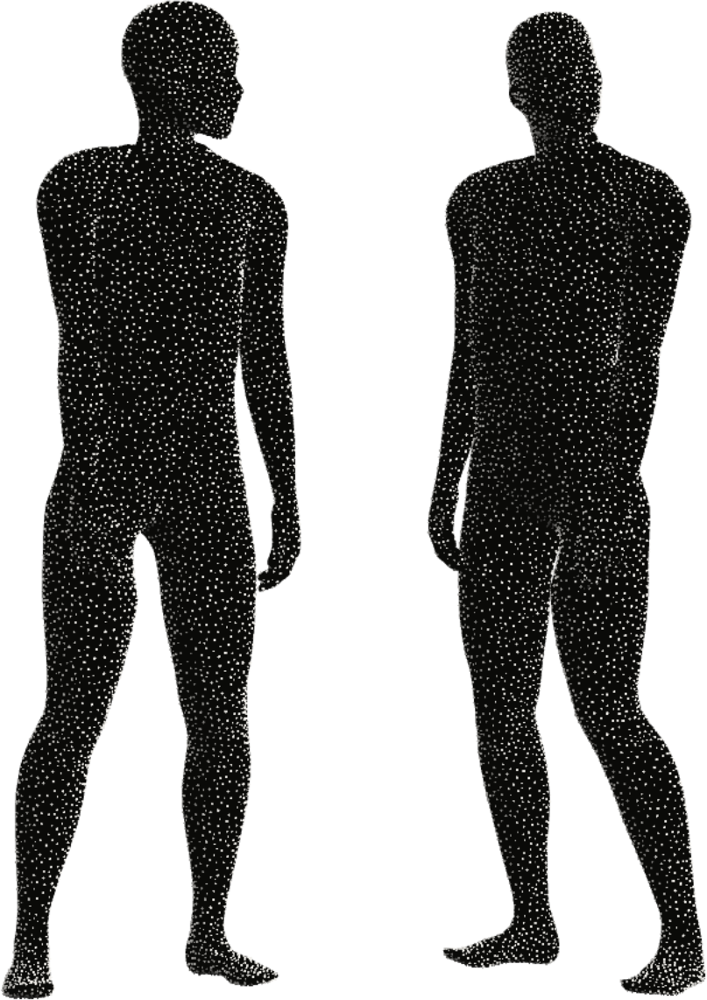
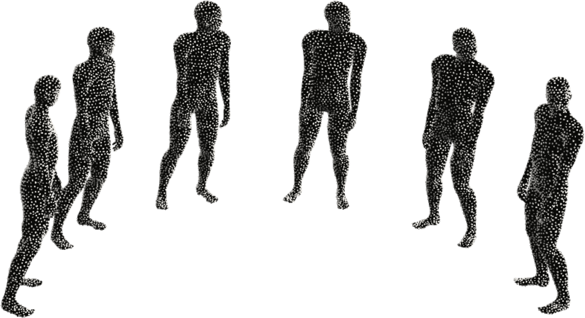

Продукты
Пять продуктов. Одна система
Что-то из этого работает уже сегодня, что-то мы только готовим.
01
Анализ осанки и движения
работает- Для кого
- Для тех, кто хочет понять, что происходит с осанкой и движением, и получить понятный следующий шаг.
- Что получает человек
- Специалист разберёт осанку по фото или вживую и объяснит, что менять в обычном дне. Онлайн, очно или с выездом. Без диагнозов.

02
Работа со специалистами
работает- Для кого
- Для тех, кто после анализа хочет менять привычки движения не в одиночку.
- Что получает человек
- Онлайн-занятия, план и выездной формат: специалист помогает перенести выводы анализа в обычную жизнь.

03
Мастер-класс для специалистов
работает- Для кого
- Для тренеров, реабилитологов и специалистов по движению.
- Что получает человек
- Два дня по методологии Атлетикс Корп: как смотреть на осанку и движение и как применять это в своей работе.

04
СТАТЬ
в разработке · предпродажа- Для кого
- Для тех, кому нужна обратная связь не только на встрече со специалистом, но и в течение обычного дня.
- Что получает человек
- Носимое устройство, которое переносит обратную связь из встреч со специалистом в повседневную жизнь.
05
SportTech
тестируется- Для кого
- Для семей, которые хотят понять спортивный профиль и потенциал ребёнка.
- Что получает человек
- Оценку, которая помогает увидеть возможности ребёнка и подобрать более осмысленную траекторию развития. Без прогноза спортивной карьеры.
Как это связано
- Анализпоказывает, что происходит.
- Специалистпомогает менять.
- СТАТЬнапоминает в течение дня.
С чего начать?
С первичной консультации: анализ осанки и онлайн-разбор со специалистом.